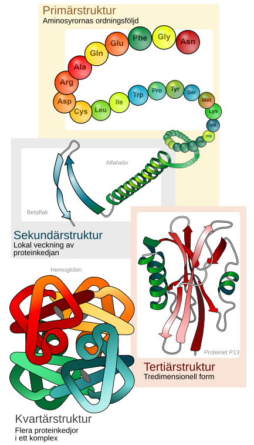
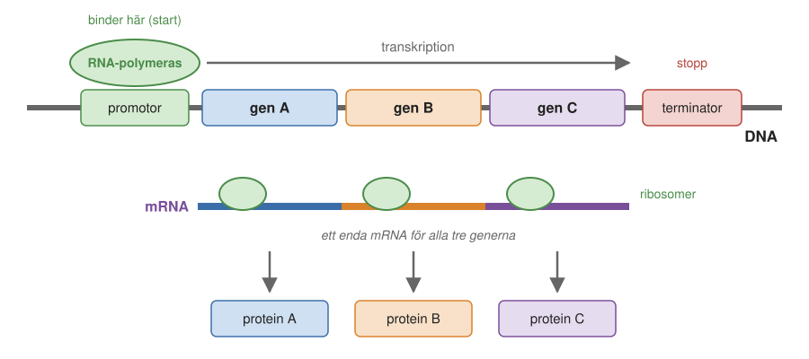
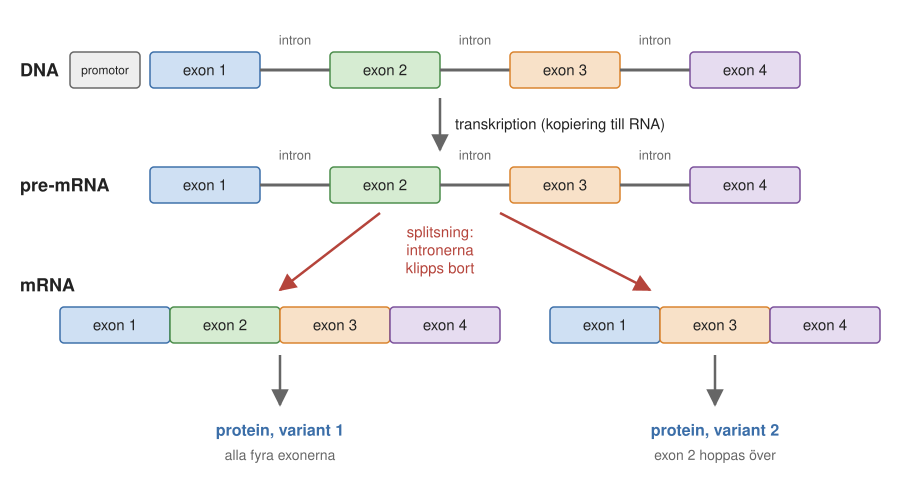
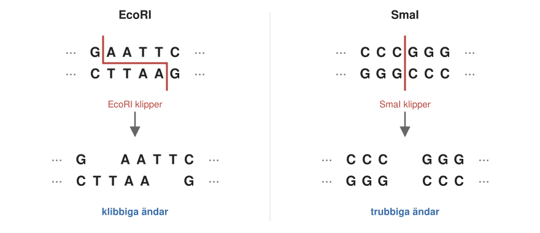
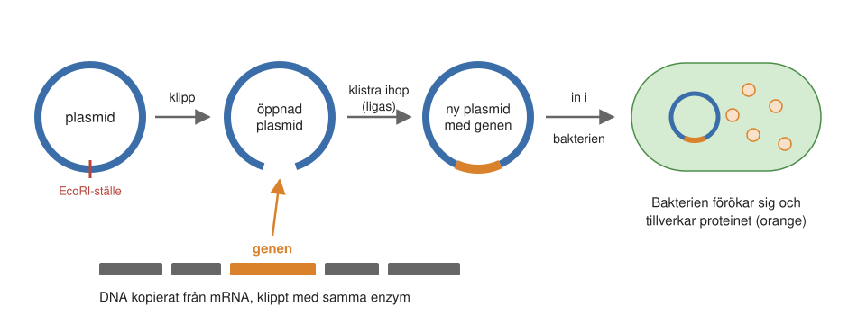
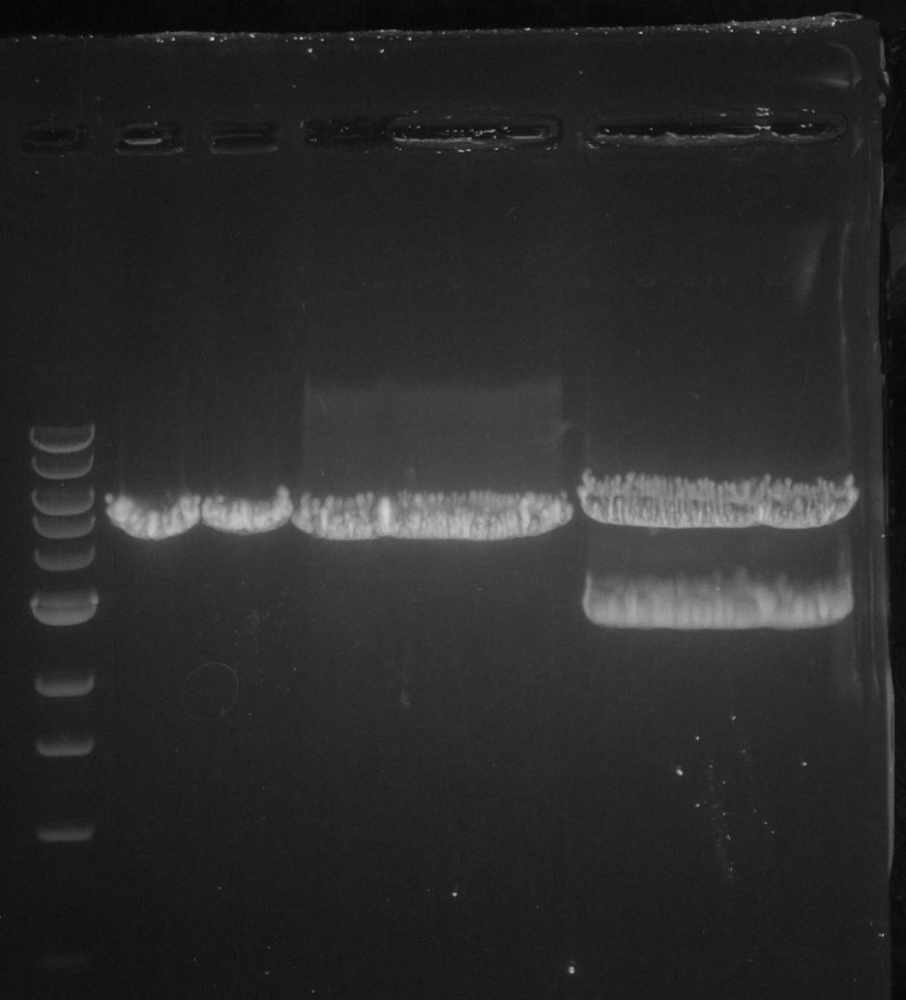
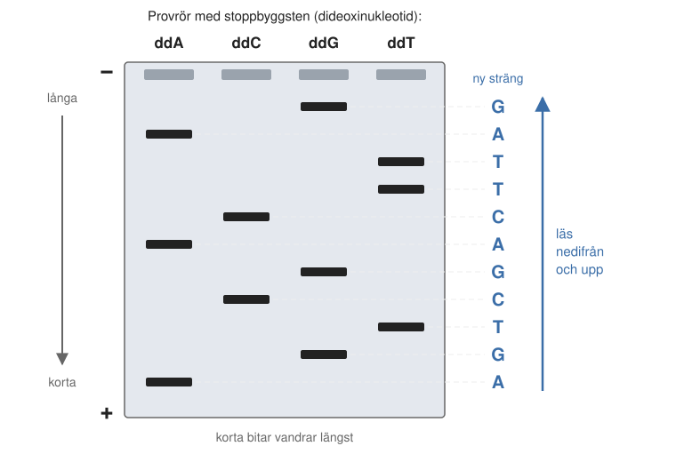
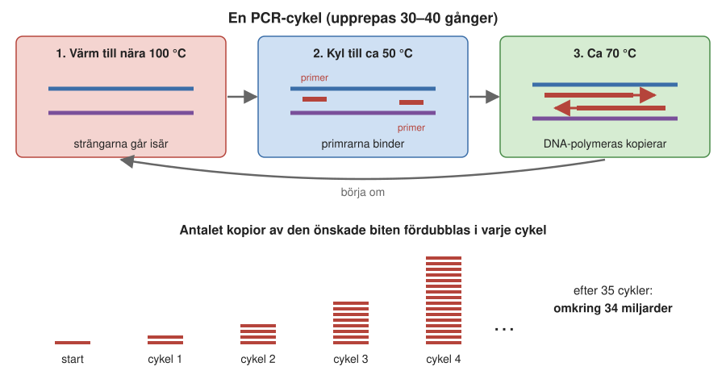
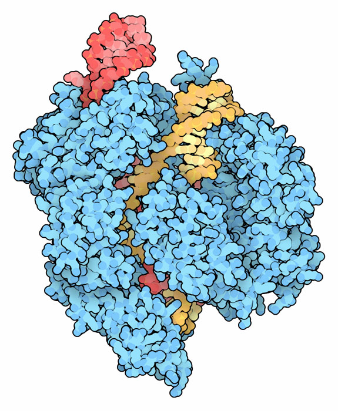

3 Gener och genteknik
Den som hade diabetes för hundra år sedan fick sitt insulin från grisar eller kor. Insulin är ett protein som bukspottkörteln tillverkar och som styr blodsockret. Grisens insulin skiljer sig från människans i bara en enda av sina byggstenar, och kons i tre, och de fungerar därför nästan lika bra. Men för att få fram insulinet måste man rena det ur bukspottkörtlar från ett mycket stort antal slaktade djur.
Tänk om man i stället kunde få en mikroorganism, en bakterie eller en jästsvamp, att tillverka mänskligt insulin. Sådana mikroorganismer kan odlas i stora tankar, de förökar sig snabbt och de kostar nästan ingenting att föda. Allt som behövs, i princip, är att ge dem rätt instruktion: en bit DNA som beskriver hur det mänskliga insulinet ska se ut. I dag är det precis så de flesta som har diabetes får sitt insulin.
Det här kapitlet handlar om hur sådant går till. Först tittar vi närmare på proteinerna, eftersom det oftast är dem man vill tillverka eller förändra. Sedan går vi igenom vad en gen är, och till sist de verktyg som gör det möjligt att klippa, klistra, kopiera, läsa och skriva om DNA. Tillsammans kallas de genteknik.
3.1 Mer om proteiner
Om DNA innehåller ritningarna till en cell, så är det proteinerna som gör nästan allt arbete. Grunderna gick vi igenom i Avsnitt 1.10: de fyra grupperna av proteiner, aminosyrornas ryggrad och sidogrupper, och alfahelixar och betaflak.
En av de fyra grupperna förtjänar några ord till: de oordnade proteinerna, som saknar en fast form. Forskarna ville länge inte tro att de fanns. Man tänkte sig att ett protein utan bestämd form inte kunde göra något nyttigt. I dag vet vi att de är ganska vanliga, särskilt hos djur och växter. De är långa, böjliga kedjor med ett bindningsställe för ett protein på ett ställe och för ett annat protein på ett annat. På så sätt kan de föra samman två proteiner en stund, för att sedan släppa dem igen.
De flesta proteiner har däremot en bestämd form. I resten av avsnittet ser vi närmare på hur en sådan proteinkedja byggs, från aminosyrorna och bindningarna mellan dem, och varför ordningen mellan aminosyrorna avgör formen.
Aminosyror vi måste äta
Proteinernas byggstenar är tjugo sorters aminosyror, men alla kan vi inte tillverka själva. Människan klarar ungefär hälften av dem. Resten, nio stycken, måste vi få i oss med maten. De kallas essentiella aminosyror. Med en varierad kost är det sällan något problem, men den som äter vegetariskt kan behöva tänka på att kombinera olika proteinkällor, till exempel baljväxter och spannmål, eftersom växtproteiner kan innehålla lite av någon av de essentiella aminosyrorna. Bakterier kan däremot oftast tillverka alla tjugo själva.
Peptidbindningen
Hur sitter då aminosyrorna ihop i kedjan? När två aminosyror kopplas ihop binder en kolatom i den ena aminosyrans sura grupp (den del av ryggraden som gör aminosyran till en syra) till kväveatomen i nästa aminosyra. Samtidigt lossnar en syreatom och två väteatomer, det vill säga en vattenmolekyl. Den peptidbindning som bildas är mycket stabil. Den nya, längre molekylen har fortfarande en fri sur grupp i ena änden, så nästa aminosyra kan kopplas på, och så vidare.
Eftersom det är ryggraderna som kopplas ihop, och ryggraden är likadan i alla aminosyror, kan vilken aminosyra som helst kopplas till vilken annan som helst. Ordningsföljden bestäms därför inte av kemin utan av mRNA, som ribosomen läser av (Kapitel 1).
Ribosomen behövs också av ett annat skäl. I cellens vatten sker reaktionen inte av sig själv. Det är ribosomen som för fram två aminosyror, var och en buren av sitt tRNA, och håller dem så nära varandra att bindningen bildas. Ribosomen fungerar alltså som ett enzym: den får en reaktion att ske som annars inte skulle bli av.
Korta kedjor av aminosyror kallas, som vi såg i Kapitel 1, peptider. Gränsen mot proteiner är flytande; de minsta riktiga proteinerna har några tiotal aminosyror, medan de flesta har några hundra.
Ett tredimensionellt pussel
En färdig kedja är ännu inte ett fungerande protein. Den måste först vika ihop sig till rätt form. En proteinkedja är inte stel. Den kan vrida sig runt de flesta bindningarna i ryggraden, och sidogrupperna kan också vrida sig. När en ny kedja kommer ut från ribosomen börjar den därför vika ihop sig, och det är sidogrupperna som styr hur.
De opolära, vattenskygga sidogrupperna (se Figur 1.9) undviker vatten och klumpar gärna ihop sig med varandra. En positivt laddad sidogrupp dras till en negativt laddad. Kedjan vrider och vänder sig tills de opolära sidogrupperna har samlats i mitten och de polära och laddade sitter på ytan, mot vattnet. Resultatet blir en tätt packad, bestämd tredimensionell form. Det är som ett tredimensionellt pussel, där bitarna sitter ihop i en kedja och där bara ett sätt att lägga pusslet ger en riktigt bra lösning.
Alla sekvenser har inte någon bra lösning. Om aminosyrorna sitter i fel ordning kanske det inte går att samla alla de opolära i mitten. Men i naturliga proteiner har evolutionen under miljarder år finslipat ordningsföljden, så att varje sorts protein veckar sig till en bestämd form. Två kedjor med samma ordningsföljd veckar sig till samma form.
Det är formen som avgör vad proteinet kan göra: var det har sina fickor där små molekyler binder, och var det har sitt aktiva centrum, där en reaktion sker (Kapitel 4). Hur veckningen går till, och vad som händer när den misslyckas, är ämnet för Kapitel 14 och Kapitel 15.
Hur många ordningsföljder finns det då att välja mellan? Antalet är enormt. Ett typiskt protein har kanske 300 aminosyror, och i varje position kan någon av de tjugo sitta. Redan med två positioner finns 20 × 20 = 400 möjligheter, med tre 8 000. Med 300 positioner blir det ett tal med omkring 390 siffror, långt fler än det finns atomer i hela det kända universum. Livet har alltså bara prövat en försvinnande liten del av alla tänkbara proteiner.
Spiraler och pilar
Alfahelixen och betaflaket, som vi mötte i Avsnitt 1.10.3, är byggstenar i en större beskrivning. Ett proteins form brukar beskrivas i fyra nivåer, från ordningsföljden av aminosyror till hur flera kedjor sitter ihop (Figur 3.1).

Bilden visar också hur forskare brukar rita proteiner. Alfahelixar ritas som spiralband och delarna av ett betaflak som breda pilar. Ett protein ser då ut som en samling spiraler och pilar förbundna med slingor. Det är en bra karta över hur kedjan löper, men verkligheten är mer packad. Om man ritar ut alla atomer ser proteinet ut som en knölig klump, där sidogrupperna trängs med varandra och hela tiden rör lite på sig och där det är svårt att se helixarna och flaken. Det är så proteinet ser ut när det arbetar i cellen.
Den stora variationen i form skiljer proteinerna från DNA. En DNA-molekyl ser i stort sett likadan ut oavsett vilken sekvens den har: en dubbelspiral. Den är perfekt för att lagra information men kan inte göra så mycket annat. Proteinerna är den motsatta ytterligheten. Deras former varierar nästan oändligt, och det är därför de kan utföra så många olika uppgifter.
3.2 Vad är en gen?
Om proteinerna är det man vill tillverka, så är generna det man måste ändra i. Som vi såg i Kapitel 1 är DNA, RNA och proteiner alla kedjemolekyler, och logiken mellan dem är enkel. Ordningsföljden av baserna i DNA bestämmer ordningsföljden av baserna i mRNA (transkription), som i sin tur bestämmer ordningsföljden av aminosyrorna i proteinet (translation).
Men var i den långa DNA-molekylen finns instruktionen för ett visst protein? En gen är ett avsnitt av en DNA-molekyl som fungerar som mall för ett mRNA, som i sin tur fungerar som mall för ett protein. Det finns också gener som bara blir RNA och aldrig översätts till protein; de RNA-molekylerna har andra uppgifter i cellen. I det här kapitlet handlar det om de gener som kodar för proteiner.
Gener är organiserade på olika sätt hos prokaryoter och eukaryoter, de två huvudtyper av celler vi mötte i Kapitel 2. Skillnaden får, som vi ska se, betydelse när man vill flytta en gen från människa till bakterie.
Bakteriernas gener: tätt packade
Hos bakterier sitter generna tätt efter varandra längs DNA-molekylen. Framför en gen, eller en grupp av gener, finns en särskild bassekvens som kallas promotor. Där binder RNA-polymeras, det enzym som kopierar DNA till RNA. Promotorn är en startsignal. Enzymet kopierar sedan DNA tills det når en stoppsignal, en terminator, och släpper då det färdiga RNA:t.
Ofta sitter flera gener som hör ihop efter varandra och kopieras till ett enda långt mRNA. Det kan till exempel vara generna för de enzymer som behövs i varje steg när bakterien tillverkar en viss aminosyra. Ribosomer läser sedan av de olika delarna av mRNA:t samtidigt och tillverkar alla proteinerna på en gång. En sådan grupp gener som styrs av en gemensam promotor kallas ett operon (Figur 3.2). Det är ett effektivt sätt att se till att proteiner som arbetar tillsammans tillverkas samtidigt.

Eftersom generna ligger så tätt är bakteriernas DNA sparsamt utnyttjat: omkring 90 procent av det kodar för proteiner. Det finns mycket lite DNA mellan generna.
Våra gener: exoner och introner
Hos eukaryoter, som människan, är det mer komplicerat. Även här finns promotorer och terminatorer, och styrningen av när en gen ska användas är betydligt mer invecklad än hos bakterier. Men den stora skillnaden upptäcktes helt oväntat i slutet av 1970-talet: generna är uppstyckade. Bitar som kodar för proteinet växlar med bitar som inte gör det.
Hela genen kopieras först till en lång RNA-molekyl, ett pre-mRNA. Sedan klipps vissa bitar bort ur RNA-molekylen, och de bitar som blir kvar klistras ihop till det färdiga mRNA:t, som är kortare än det första. De bortklippta bitarna kallas introner, och de bitar som blir kvar och kodar för proteinet kallas exoner. Processen kallas splitsning (eng. splicing).
Splitsningen ger cellen en extra möjlighet. Om en gen har flera exoner kan de klistras ihop på olika sätt. Ibland tas alla exoner med, ibland hoppas ett eller flera över (Figur 3.3). Från en och samma gen kan cellen då tillverka flera olika, men besläktade, varianter av ett protein. Det kallas alternativ splitsning och är vanligt hos människan. Våra celler har på så sätt fått en större klaviatur att spela på än bakterierna.

Introner är en anledning till att vårt DNA är mycket mindre sparsamt utnyttjat än bakteriernas. Dessutom finns stora områden mellan generna som inte heller kodar för proteiner. Bara omkring 1–2 procent av människans DNA kodar för proteiner, jämfört med omkring 90 procent hos bakterier.
I den andra ytterligheten finns virus, som är ännu mer sparsamma än bakterier. Hos en del virus överlappar generna, så att samma bit DNA eller RNA kan läsas på två sätt och koda för två olika proteiner. Man kan säga att de utnyttjar mer än hundra procent av sin arvsmassa.
Uppdelningen i exoner och introner har också en praktisk följd för gentekniken: en bakterie kan inte klippa bort introner. Vill man få en bakterie att tillverka ett mänskligt protein kan man därför inte ta genen direkt från människans DNA. Hur man gör i stället ser vi i Avsnitt 3.4.2.
Genomens storlek
En organisms hela uppsättning DNA kallas dess genom, och hur stort det är varierar enormt (Tabell 3.1). De minsta bakterierna, som lever inuti andra celler, klarar sig med under en miljon baspar (ett baspar är två bundna baser, en på var sträng). Vanliga frilevande bakterier har några miljoner. Människan har ungefär tre miljarder baspar i varje uppsättning kromosomer, och eftersom vi har två uppsättningar, en från varje förälder, innehåller varje cell ungefär sex miljarder.
| Organism | Antal baspar (ungefär) |
|---|---|
| bakterie som lever i bladlössens celler (Buchnera) | 0,6 miljoner |
| tarmbakterien E. coli | 4,6 miljoner |
| bakjäst | 12 miljoner |
| bananfluga | 140 miljoner |
| människa | 3 miljarder |
| australisk lungfisk | 43 miljarder |
| växten Paris japonica | 150 miljarder |
Vi är alltså långt ifrån störst. Vissa växter har omkring femtio gånger så mycket DNA som vi, och vissa groddjur och lungfiskar har också mycket stora genom. Det betyder inte att de är mer avancerade. En stor del av deras DNA består av upprepade kopior, och mängden DNA säger inte särskilt mycket om hur komplicerad en organism är. Vi återkommer till genomen i Kapitel 11.
3.3 Genteknik: att skriva om ritningen
När forskarna på 1960-talet hade förstått hur DNA, RNA och proteiner hänger ihop, väcktes en tanke. Det är svårt att direkt ändra i ett protein, men om man kunde ändra i DNA, i ritningen, så skulle cellen själv tillverka det nya proteinet. Man skulle kunna bestämma att en bakterie ska tillverka ett protein med exakt den ordningsföljd av aminosyror man vill, räkna ut vilken DNA-sekvens som behövs, och föra in den i bakterien.
Men hur ändrar man i en molekyl som är alldeles för liten för att se? Nästan all genteknik bygger på en enda egenskap hos DNA och RNA: basparningen. A binder alltid till T (eller U i RNA), och G binder alltid till C. Det gör att en sträng kan hitta och fastna på en annan sträng med passande sekvens, och att varje sträng kan användas som mall för att tillverka en ny.
Verktygen kan delas i två grupper. Den första bygger på att klippa och klistra i DNA. Den andra bygger på att kopiera DNA, på samma sätt som cellen gör när den delar sig.
3.4 Att klippa och klistra i DNA
För att klippa och klistra i DNA behövs tre saker: en sax som klipper på bestämda ställen, ett sätt att klistra in en bit i en bakterie, och ett sätt att hitta rätt bit bland alla som bildas. Vi tar dem i tur och ordning.
Restriktionsenzymer: molekylära saxar
Det första verktyget upptäcktes av forskare som studerade bakterier, utan någon tanke på genteknik. Bakterier har enzymer som klipper av DNA, och som de använder för att försvara sig mot virus. Varje sådant restriktionsenzym letar upp en bestämd kort bassekvens och klipper av båda DNA-strängarna just där.
Enzymet EcoRI, från tarmbakterien E. coli, känner till exempel igen sekvensen GAATTC (Figur 3.4). Mitt emot står CTTAAG på den andra strängen, men eftersom de två strängarna löper åt motsatta håll (Avsnitt 1.5.1) ska den läsas baklänges, och då står det också GAATTC. Sekvensen är ett palindrom, som ordet “kajak”. Sådana sekvenser är typiska för restriktionsenzymernas igenkänningsställen.
EcoRI klipper mellan G och A på båda strängarna. Eftersom klippen sitter lite förskjutna, blir det kvar korta enkelsträngade bitar på ändarna: AATT på den ena, och den passande sekvensen på den andra. De kallas klibbiga ändar, eftersom de kan baspara med varandra och fastna ihop igen. Andra enzymer, som SmaI, klipper rakt av på samma ställe på båda strängarna och ger trubbiga ändar.

Snart insåg forskarna vad det innebar. Om man klipper två olika DNA-molekyler med samma enzym, så får alla bitarna likadana klibbiga ändar. Då kan en bit från den ena molekylen klistras in i den andra.
Genkloning: en mänsklig gen i en bakterie
Nästa fråga var vart den inklistrade biten skulle ta vägen. Många bakterier har, förutom sin stora kromosom, små ringformade DNA-molekyler som kallas plasmider. De är som små extra kromosomer, och de kopieras och förs vidare när bakterien delar sig. Plasmiderna blev genteknikens transportfordon (Figur 3.5).
Så här går det till i princip:
- Man renar fram plasmider och klipper dem med ett restriktionsenzym som bara har ett igenkänningsställe på plasmiden. Ringen öppnas.
- Man tar fram en DNA-bit med den gen man vill ha och klipper den med samma enzym, så att den får samma klibbiga ändar. För en mänsklig gen kan man inte ta DNA direkt ur cellkärnan, eftersom bakterien inte kan klippa bort introner. I stället kopierar man genens mRNA, där intronerna redan är bortklippta, tillbaka till DNA med enzymet omvänt transkriptas, som kommer från virus.
- Man blandar plasmiderna med DNA-biten. De klibbiga ändarna basparar, och ett annat enzym, DNA-ligas, fogar ihop strängarna så att ringen blir hel igen. Nu har plasmiden fått en extra bit DNA.
- Man för in den nya plasmiden i bakterier. När bakterierna förökar sig kopieras plasmiden, och om genen sitter bakom rätt startsignaler tillverkar bakterierna proteinet.

Att föra in en gen i en organism på det här sättet kallas kloning, och en sådan bakterie kallas genmodifierad. Ordet kloning syftar på att man får många identiska kopior av samma gen.
Det var just så man till slut fick bakterier att tillverka insulinet från kapitlets början. Mänskligt insulin blev det första läkemedlet som tillverkades på detta sätt, och det godkändes i början av 1980-talet.
I Sverige var en av de första tillämpningarna tillväxthormon, ett protein som barn med hormonbrist behöver för att växa normalt. Läkemedelsföretaget Kabi i Stockholm sålde tillväxthormon som renats fram ur hypofysen, en liten körtel under hjärnan, från avlidna människor. I slutet av 1970-talet började Kabi samarbeta med det amerikanska bioteknikföretaget Genentech, som 1979 fick en bakterie att tillverka hormonet, och Kabi bildade dotterbolaget KabiGen för att producera det i Sverige. Det kom lägligt. År 1985 visade det sig att hormon från avlidna i sällsynta fall kunde föra över en dödlig hjärnsjukdom, Creutzfeldt-Jakobs sjukdom, och det drogs in. Hormonet från bakterier var fritt från den risken, och det fanns obegränsat med det.
Gelelektrofores: att sortera DNA efter storlek
När man klipper upp DNA med ett restriktionsenzym bildas många bitar av olika längd. Hur hittar man den rätta biten bland dem? Ett enkelt och fortfarande mycket använt sätt är gelelektrofores (Figur 3.6).
Man gjuter en tunn, platt skiva av en geléartad massa och gör små brunnar i ena kanten. DNA-provet läggs i en brunn, och man kopplar på en elektrisk spänning över gelen. DNA är negativt laddat och vandrar därför mot den positiva polen. Gelen fungerar som ett tätt nät: korta DNA-bitar tar sig lätt igenom maskorna och vandrar snabbt, medan långa bitar trasslar in sig och kommer efter. Efter en stund har bitarna sorterats efter längd, och man kan skära ut den bit man vill ha med en kniv. Samma metod används för att sortera proteiner efter storlek.

3.5 Att kopiera DNA i ett provrör
Den andra gruppen av verktyg bygger på det sätt som cellen kopierar sitt DNA. Den kopieringen är grunden både för att läsa DNA och för PCR, som de följande avsnitten handlar om.
När DNA kopieras dras de två strängarna isär, och ett enzym, DNA-polymeras, bygger en ny sträng mot var och en av de gamla. Den gamla strängen fungerar som mall: mitt emot varje A sätts ett T in, mitt emot varje G ett C, och så vidare.
DNA-polymeras kan dock inte börja från ingenting. Det behöver en kort bit som redan sitter fast på mallsträngen, en primer, att bygga vidare från. En primer är en kort sträng, ofta 15–25 baser lång, som basparar med mallen på ett bestämt ställe. Primern får inte vara för kort, för då passar den på många ställen. Varje position kan vara en av fyra baser, så redan med 20 baser finns över en biljon (420) möjliga sekvenser. Det är många gånger fler än de omkring tre miljarder baspar som finns i människans arvsmassa, så en viss primer passar oftast bara på ett enda ställe.
Allt detta kan göras i ett provrör. Man värmer DNA så att strängarna går isär, tillsätter primrar som fastnar där de passar, kyler ned, och tillsätter DNA-polymeras och de fyra byggstenarna. Då kopierar enzymet mallsträngen från primern och framåt. Primrar med vilken sekvens som helst kan i dag beställas från företag som tillverkar dem kemiskt, billigt och snabbt.
3.6 Att läsa DNA: Sangers metod
Att bestämma i vilken ordning baserna sitter i en DNA-molekyl kallas DNA-sekvensering. Med den kan man läsa en gen och därmed ta reda på hur proteinet ser ut. Den första praktiska metoden uppfanns av den brittiske biokemisten Frederick Sanger i Cambridge, och den byggde på ett genialt trick: att få kopieringen att stanna vid en bestämd bas.
DNA:s byggstenar kallas deoxinukleotider: sockret i dem saknar en av de syreatomer som finns i RNA:s socker. När DNA-polymeras förlänger en sträng, binder nästa byggsten till en syreatom (i en så kallad OH-grupp) på sockret i den sista byggstenen. Sanger använde byggstenar som saknar också den syreatomen, dideoxinukleotider. En sådan byggsten kan fogas in i strängen, men sedan finns ingen OH-grupp att binda nästa byggsten till. Kedjan tar stopp.
Metoden går till så här. Man kopierar det DNA man vill läsa, med hjälp av en primer och DNA-polymeras, i fyra provrör. Alla innehåller vanliga byggstenar i överskott. Men det första provröret innehåller också en liten mängd stopp-A, det vill säga dideoxi-versionen av A. Varje gång polymeraset ska sätta in ett A finns en liten chans att det tar ett stopp-A, och då tar den kedjan slut. I provröret bildas därför en blandning av kedjor av olika längd, och alla slutar med A. Varje längd motsvarar ett ställe där det ska sitta ett A i den nya strängen. På samma sätt innehåller de andra provrören stopp-C, stopp-G och stopp-T.
Sedan körs de fyra proven bredvid varandra på en gel, där kedjorna sorteras efter längd. Sekvensen kan nu läsas direkt (Figur 3.7): den kortaste kedjan visar vilken bas som kom först efter primern, den näst kortaste vilken som kom därefter, och så vidare. Den nya strängen är komplementär till den man ville läsa, men det är lätt att översätta: ett A i den nya strängen betyder ett T i originalet.

I början läste forskarna gelerna för hand, med en penna, och en bra dag kunde man få fram omkring hundra baser. Det var mödosamt men revolutionerande: plötsligt kunde man läsa en gen, och med hjälp av den genetiska koden räkna ut ordningsföljden av aminosyror i proteinet.
Senare gjordes de fyra sortens stoppbyggstenar självlysande i olika färger, så att allt kunde köras i ett enda provrör och avläsas automatiskt med en laser. I dag kan en modern sekvenseringsmaskin läsa miljarder baser om dagen med andra, nyare metoder, som vi återkommer till i Kapitel 11.
3.7 PCR: att kopiera en bit DNA miljarder gånger
Ofta har man för lite DNA av det man vill undersöka. PCR, av engelskans polymerase chain reaction (polymeraskedjereaktion), är ett sätt att ur en blandning av DNA göra ett nästan obegränsat antal kopior av en enda bestämd bit, till exempel en gen.
Metoden uppfanns 1983 av amerikanen Kary Mullis, en färgstark forskare och surfare som arbetade på ett bioteknikföretag i Kalifornien. Enligt hans egen berättelse kom idén en fredagskväll när han körde upp i bergen mot sin stuga, med en ny flickvän i bilen. Idén tog så mycket av hans uppmärksamhet att helgen mest gick åt till att tänka på den. PCR är kanske inte lika genialt som Sangers metod, men det har blivit ännu mer användbart.
Idén är enkel. Man använder två primrar, som passar på var sin sträng på var sin sida om den bit man vill kopiera. Sedan upprepar man samma tre steg om och om igen (Figur 3.8):
- Värm till nära 100 °C, så att DNA-strängarna går isär.
- Kyl till omkring 50 °C, så att primrarna kan binda där de passar.
- Värm lite igen, till omkring 70 °C, så att DNA-polymeras kan bygga nya strängar från primrarna.
Eftersom de nya strängarna i sin tur blir mallar i nästa cykel, fördubblas antalet kopior av den önskade biten i varje cykel. Efter 10 cykler har man ungefär tusen kopior, efter 20 ungefär en miljon och efter 30 ungefär en miljard. Efter 35 cykler har en enda DNA-molekyl blivit omkring 34 miljarder kopior av den önskade biten.
Men blir alla kopior verkligen just den bit man ville ha? I de första cyklerna bildas också strängar som börjar vid en primer men fortsätter långt bortom målet. De blir dock inte fler än ett fåtal, medan biten mellan primrarna fördubblas varje gång. Efter 16 cykler finns 65 536 kopior, och av dem har alla utom 32 exakt den längd som primrarna bestämmer. Det är hemligheten bakom PCR: det man får är i stort sett bara den bit som ligger mellan de två primrarna.

Ett problem var att vanligt DNA-polymeras förstörs när man värmer till nära 100 °C. Lösningen blev ett DNA-polymeras från en bakterie som lever i heta källor, i Yellowstone i USA. Det tål värmen och klarar alla cykler. Därmed kunde hela processen skötas automatiskt av en liten maskin som växlar temperaturen upp och ned. Man lägger i sitt DNA, sina två primrar, byggstenar och enzym, trycker på start, och några timmar senare har man miljarder kopior. I dag finns en PCR-maskin i nästan varje biologiskt laboratorium. Mullis fick Nobelpriset i kemi 1993.
PCR-testet för covid-19
De flesta har kommit i kontakt med PCR, även om de inte vet om det. Det test för covid-19 där man tog ett prov långt in i näsan byggde på PCR. Viruset SARS-CoV-2, som vi mötte i Kapitel 2, har en arvsmassa av RNA. Ur provet renade man fram allt RNA. Eftersom det är lättare att arbeta med DNA, kopierades RNA:t sedan tillbaka till DNA med omvänt transkriptas, samma enzym som vid genkloningen. Därefter kördes PCR med primrar som bara passar på virusets arvsmassa.
Om provet inte innehöll något virus fanns det ingenting för primrarna att binda till, och ingenting kopierades. Fanns det däremot bara några få virusmolekyler, så bildades miljarder kopior, som är lätta att upptäcka. Man kan till och med följa hur snabbt kopiorna ökar och därmed uppskatta hur mycket virus provet innehöll.
Snabbtesterna som man kunde göra hemma fungerade på ett annat sätt. De använde antikroppar för att känna igen virusets proteiner. De var enklare, men mindre känsliga än PCR-testet, som kunde upptäcka bara några få virusmolekyler.
PCR-testet kunde också tas fram slående snabbt. Kinesiska forskare publicerade virusets arvsmassa på internet i januari 2020, och omkring en vecka senare hade en forskargrupp i Berlin tagit fram och publicerat ett färdigt PCR-test som vilket laboratorium som helst kunde använda. Eftersom viruset hela tiden muterade, följde man förändringarna i dess arvsmassa och valde primrar mot delar som sällan förändrades.
3.8 Riktad mutagenes: att ändra en enda bokstav
Primrar och DNA-polymeras kan användas inte bara för att kopiera en gen, utan också för att ändra den, en enda bas i taget. Man tillverkar en primer som passar nästan perfekt på det ställe man vill ändra, men där en bas i mitten är utbytt. Om primern är 15–20 baser lång räcker de korrekta baserna på var sida för att den ska fastna på rätt ställe, trots felet. När DNA-polymeras sedan bygger vidare från primern får den nya strängen den ändrade basen, och den förs vidare i alla följande kopior.
Resultatet är en gen som är exakt som originalet, utom på en enda punkt. En sådan förändring i DNA kallas en mutation, och metoden kallas riktad mutagenes. På liknande sätt kan man ta bort eller lägga till några baser.
Riktad mutagenes gjorde det möjligt att fråga hur ett protein fungerar genom att byta ut en aminosyra i taget och se vad som händer. Den kanadensiske forskaren Michael Smith fick Nobelpriset i kemi 1993, samma år som Mullis, för en tidig metod för riktad mutagenes. Teknikerna har sedan vidareutvecklats. Frances Arnold fick Nobelpriset i kemi 2018 för att ha använt slumpmässiga mutationer och urval, en sorts evolution i provröret, för att ta fram enzymer med nya egenskaper. Mer om det i Kapitel 5.
3.9 CRISPR-Cas9: gensaxen
Metoderna ovan fungerar bra i bakterier och jäst, men det är svårt att använda dem för att ändra arvsmassan i växter, djur eller människor. Det ändrades med upptäckten av CRISPR-Cas9, i medierna ofta kallad gensaxen.
Cas9 är ett enzym från bakterier som, precis som ett restriktionsenzym, klipper av DNA. Skillnaden är hur det hittar rätt ställe. Ett restriktionsenzym känner alltid igen samma korta sekvens. Cas9 bär i stället med sig en RNA-molekyl, ett guide-RNA, och klipper där guide-RNA:t hittar en DNA-sekvens som det kan baspara med (Figur 3.9).
I bakterierna är det ett försvarssystem, precis som restriktionsenzymerna. Bakterien sparar bitar av arvsmassan från virus som har angripit den, och använder dem som guide-RNA för att känna igen och klippa sönder samma virus om det kommer tillbaka.

Det geniala är att man inte behöver ändra något i enzymet för att få det att klippa på ett nytt ställe, bara i guide-RNA:t. Eftersom vi känner till hela sekvensen i människans arvsmassa, kan man välja en position i en viss gen, beställa ett guide-RNA som passar just där och ingen annanstans, och föra in det tillsammans med Cas9 i cellerna. Enzymet letar upp stället och klipper av DNA-molekylen.
Själva ändringen gör cellen. När den reparerar skadan kan man få den att föra in en ändring, ta bort en bit eller sätta in en ny. Vill man föra in en bestämd ändring ger man samtidigt cellen en bit DNA med den önskade sekvensen, som cellen använder som mall när den lagar brottet. Det fungerar inte i varje cell, men bland många celler finns alltid några där ändringen har lyckats. Metoden fungerar i nästan alla sorters organismer: bakterier, växter, djur och människor.
Upptäckten gjordes av två forskare tillsammans. Emmanuelle Charpentier, som är fransk, arbetade då vid Umeå universitet och studerade hur en bakterie försvarar sig mot virus. Jennifer Doudna, vid University of California i Berkeley, var expert på RNA. De möttes på en konferens 2011, insåg att de hade kompletterande kunskaper, och redan året därpå kunde de visa att Cas9 kan programmeras att klippa var man vill. De fick Nobelpriset i kemi 2020 (Figur 3.10).
När metoden väl var känd exploderade kreativiteten bland forskare världen över, och i dag finns en mängd varianter och tillämpningar. Bland annat har de första behandlingarna av ärftliga blodsjukdomar med hjälp av CRISPR godkänts.
3.10 Sammanfattning
- Proteiner är kedjor av tjugo sorters aminosyror, som ribosomen kopplar ihop med peptidbindningar. Nio av aminosyrorna kan människan inte tillverka själv utan måste få i sig med maten.
- Ordningsföljden av aminosyror avgör hur kedjan veckar sig: de opolära sidogrupperna hamnar inuti och de polära på ytan. Alfahelixar och betaflak, som hålls ihop av vätebindningar, finns i nästan alla proteiner.
- En gen är ett avsnitt av DNA som är mall för ett RNA, oftast ett mRNA som översätts till ett protein. Bakteriernas gener ligger tätt och styrs ofta i grupper (operon). Våra gener är uppdelade i exoner och introner, och intronerna klipps bort genom splitsning.
- Genteknik bygger på basparningen. Restriktionsenzymer klipper DNA vid bestämda sekvenser, och med ligas kan bitarna klistras in i plasmider som förs in i bakterier, som då tillverkar till exempel mänskligt insulin. För en mänsklig gen utgår man från mRNA, eftersom bakterier inte kan klippa bort introner.
- Gelelektrofores sorterar DNA-bitar efter längd.
- Sangers metod läser DNA med hjälp av byggstenar som stoppar kopieringen. PCR kopierar en bestämd bit DNA miljarder gånger genom att upprepa cykler av uppvärmning och kopiering.
- Med riktad mutagenes kan man ändra enstaka baser i en gen, och med CRISPR-Cas9, som styrs av ett guide-RNA, kan man ändra arvsmassan på ett bestämt ställe i nästan vilken organism som helst.
3.11 Nyckelbegrepp
- essentiell aminosyra – Aminosyra som kroppen inte kan tillverka själv och som vi därför måste få i oss med maten. Människan har nio sådana.
- promotor – Bassekvens i DNA framför en gen där RNA-polymeras binder och börjar kopiera genen till RNA. En startsignal.
- operon – Grupp av bakteriegener som sitter efter varandra, styrs av samma promotor och kopieras till ett gemensamt mRNA.
- exon – Del av en eukaryot gen som blir kvar i det färdiga mRNA:t och som oftast kodar för en del av proteinet.
- intron – Del av en eukaryot gen som kopieras till RNA men klipps bort innan mRNA:t är färdigt.
- splitsning – Processen där intronerna klipps bort ur RNA och exonerna fogas ihop till ett färdigt mRNA (eng. splicing). Vid alternativ splitsning kan exonerna kombineras på olika sätt, så att en gen ger flera proteinvarianter.
- baspar – Två baser, en på vardera DNA-strängen, som binder till varandra (A med T, G med C). Genomets storlek anges ofta i antal baspar.
- genteknik – Metoder för att klippa, klistra, kopiera, läsa och ändra DNA, till exempel för att få en organism att tillverka ett nytt protein.
- restriktionsenzym – Bakterieenzym som känner igen en bestämd kort bassekvens i DNA och klipper av båda strängarna där. Kan ge klibbiga eller trubbiga ändar.
- plasmid – Liten ringformad DNA-molekyl i bakterier, som kopieras när bakterien delar sig. Används för att föra in nya gener i bakterier.
- DNA-ligas – Enzym som fogar ihop DNA-strängar, till exempel när en DNA-bit ska klistras in i en plasmid.
- kloning – Att föra in en gen i en organism, oftast en bakterie, så att genen kopieras och kanske också används för att tillverka proteinet.
- gelelektrofores – Metod för att sortera DNA-bitar (eller proteiner) efter storlek genom att låta dem vandra i en gel i ett elektriskt fält. Korta bitar vandrar snabbast.
- DNA-polymeras – Enzym som bygger en ny DNA-sträng med en befintlig sträng som mall.
- primer – Kort bit DNA som basparar med en mallsträng och som DNA-polymeras kan bygga vidare från.
- DNA-sekvensering – Att bestämma i vilken ordning baserna sitter i en DNA-molekyl.
- dideoxinukleotid – DNA-byggsten som saknar den OH-grupp som nästa byggsten ska binda till. När den fogas in tar kopieringen stopp. Grunden för Sangers sekvenseringsmetod.
- PCR – Polymeraskedjereaktion: metod där en bestämd bit DNA kopieras miljarder gånger genom upprepade cykler av uppvärmning, inbindning av primrar och kopiering.
- omvänt transkriptas – Enzym, ursprungligen från virus, som kopierar RNA tillbaka till DNA. Används bland annat för att göra DNA-kopior av mänskliga gener utan introner och i PCR-test för RNA-virus.
- riktad mutagenes – Metod för att med hjälp av en primer med en avvikande bas ändra en gen på ett bestämt ställe.
- CRISPR-Cas9 – Gensaxen: bakterieenzymet Cas9 tillsammans med ett guide-RNA som styr var i DNA enzymet klipper. Används för att ändra arvsmassan i nästan alla organismer.
- guide-RNA – RNA-molekyl som Cas9 bär med sig och som genom basparning letar upp det ställe i DNA där enzymet ska klippa.
3.12 Testa dig själv
Flervalsfrågor
Välj ett svar och tryck på Rätta. Svarsalternativen visas i ny ordning varje gång.
Fundera vidare
3.1 Ett protein med 300 aminosyror kan i princip byggas på ett astronomiskt antal sätt. Förklara varför, och varför ändå inte vilken sekvens som helst ger ett fungerande protein.
3.2 Jämför hur gener är organiserade hos bakterier och hos människan.
3.3 Beskriv i stora drag hur man kan få en bakterie att tillverka mänskligt insulin.
3.4 Förklara hur PCR-testet för covid-19 kunde visa om en person var smittad.
3.5 På vilket sätt liknar CRISPR-Cas9 ett restriktionsenzym, och vad är den avgörande skillnaden?
Hjälp oss att förbättra kapitlet
Hittade du ett fel, eller något som var svårt att förstå? Skicka ett förslag i förslagsformuläret (kräver inloggning med SU-konto). Lärarna läser alla förslag inför nästa version av boken.
3.13 Läs mer
- Genteknik, Polymeraskedjereaktion och CRISPR på svenska Wikipedia.
- Nobelpriset i kemi 2020, populärvetenskaplig beskrivning av gensaxen CRISPR-Cas9 (på engelska).
- Nobelpriset i kemi 1993 till Kary Mullis för PCR och Michael Smith för riktad mutagenes, och Nobelpriset i kemi 1980 till bland andra Frederick Sanger för DNA-sekvensering (på engelska).
- Restriction Enzymes och Cascade and CRISPR, Molecule of the Month på PDB-101 (på engelska), med bilder av David S. Goodsell.